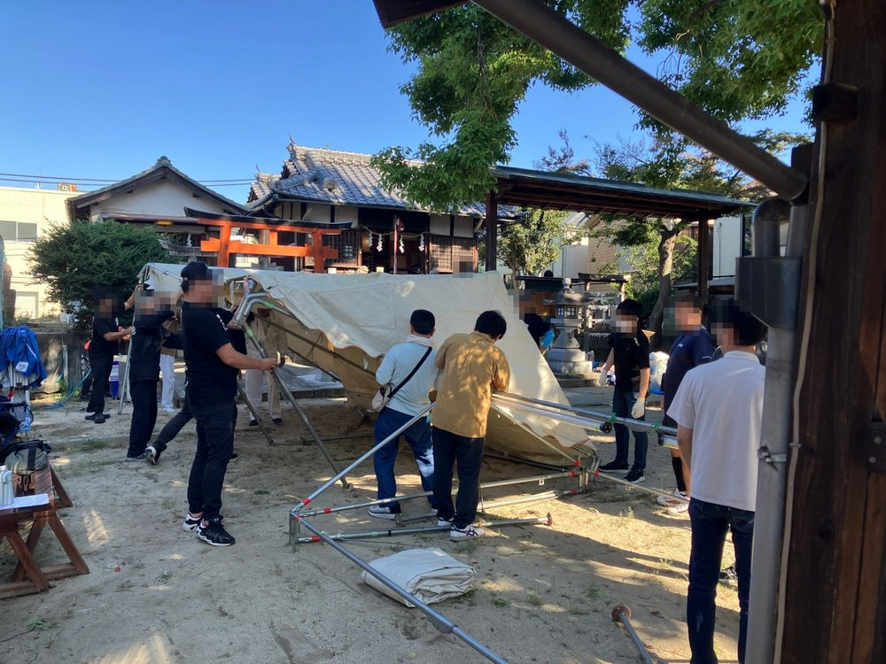
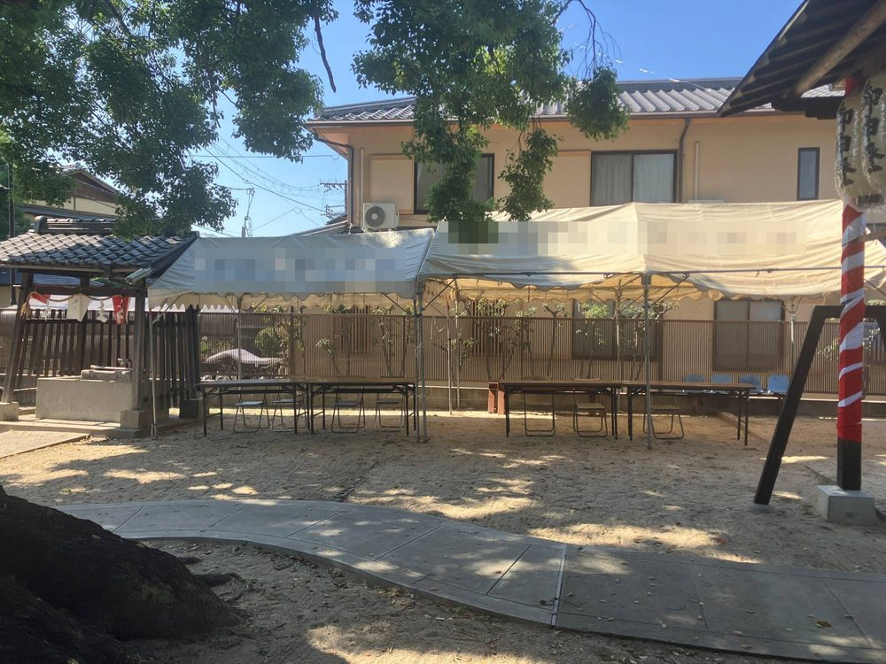

こんにちは、まっさんです。
いよいよ今週末は秋祭り。神社での設営が完了しました（写真は、お顔と町会名を加工しています）。

テントの骨組みを広げて、幕をかけて、机と椅子を並べて。人数がそろっていたので、思っていたよりずっと早く形になりました。

ここで受付をして、抽選会とお菓子くじをやります。
設営が終わってひと安心、とはいきません。本番は、受付業務に模擬店の運営と、やることが一気に押し寄せます。
会員証を持ってこなかった方の加入確認、くじの受付、景品の受け渡し。きっと想定していなかったトラブルも出てくると思います。正直、今から不安です。
もうひとつ、気にかかっていることがあります。他の地域で、地車が転倒して下敷きになり、亡くなられた方が出る事故があったと聞きました。
地車は迫力があってお祭りの華ですが、その分、一歩間違えると大きな事故につながります。うちの町会が地車を動かすわけではありませんが、見物する人も、子どもたちも、たくさん集まります。
終わったら、また報告します。
ほな、また。